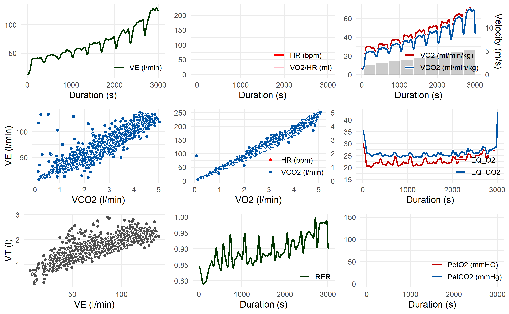

Overview
This R package offers a fast, standardized and reproducible workflow for data from cardiopulmonary exercise testing. It offers tools for data import, processing, summary and visualization.
Background
Measuring gas exchange during physical exercise is a common procedure in sports science and medicine. It allows to assess the functional limit of the cardiovascular system, evaluate the success of training interventions, and diagnose cardio-respiratory diseases. The measuring devices of cardiopulmonary exercise testing — so-called metabolic carts — output their data in different formats. Moreover, measured breath-by-breath data is noisy and requires post-processing. This package standardizes the import and processing of raw data from different metabolic carts.
Installation
Install spiro from CRAN:
install.packages("spiro")Install the current development version of spiro from GitHub:
if (!require(remotes)) install.packages("remotes")
remotes::install_github("ropensci/spiro")Usage
Main functions:
- Use
spiro()to automatically import and process raw data from cardiopulmonary exercise testing. - Use
spiro_summary()for a summary of cardiopulmonary parameters (e.g., relative oxygen uptake, respiratory quotient, heart rate, …) for each load step. - Use
spiro_max()to calculate maximum parameter values (e.g., VO2max). - Use
spiro_plot()to visualize the data as a modifiable Wassermann 9-Panel Plot.
Further functionality:
- Add external heart rate data from a .tcx file.
- Automated guessing or manual setting of exercise protocols.
- Different data filtering strategies for VO2max determination (moving time averages, moving breath averages, Butterworth filters)
Example
library(spiro)
# get data path for example
file <- spiro_example("zan_gxt")
# import and process the raw data
gxt_data <- spiro(file)
# summary of parameters by load step
spiro_summary(gxt_data)
#> for pre-measures, interval was set to length of measures (60 seconds)
#> step_number duration load VO2 VCO2 VE HR PetO2 PetCO2 VO2_rel
#> 1 0 60 0.0 500.19 411.74 13.03 NA NA NA 7.58
#> 2 1 300 2.0 1860.92 1585.75 39.87 NA NA NA 28.20
#> 3 2 300 2.4 2097.82 1805.27 44.63 NA NA NA 31.79
#> 4 3 300 2.8 2413.01 2122.17 52.63 NA NA NA 36.56
#> 5 4 300 3.2 2710.68 2319.93 57.19 NA NA NA 41.07
#> 6 5 300 3.6 3048.75 2684.87 67.45 NA NA NA 46.19
#> 7 6 300 4.0 3404.02 3026.70 75.91 NA NA NA 51.58
#> 8 7 300 4.4 3724.37 3383.64 88.36 NA NA NA 56.43
#> 9 8 300 4.8 4223.82 3993.55 106.44 NA NA NA 64.00
#> 10 9 300 5.2 4573.91 4488.36 127.54 NA NA NA 69.30
#> RE RER CHO FO
#> 1 NA 0.82 0.27 0.15
#> 2 234.97 0.85 1.27 0.46
#> 3 220.73 0.86 1.51 0.49
#> 4 217.62 0.88 1.95 0.48
#> 5 213.91 0.86 1.89 0.65
#> 6 213.86 0.88 2.47 0.60
#> 7 214.90 0.89 2.90 0.62
#> 8 213.75 0.91 3.50 0.56
#> 9 222.21 0.95 4.68 0.37
#> 10 222.12 0.98 5.82 0.12
# maximum values
spiro_max(gxt_data)
#> VO2 VCO2 VE VO2_rel RER HR
#> 1 4732.28 4640.75 129.62 71.7 0.99 NA
# Wassermann 9-Panel Plot
spiro_plot(gxt_data)
Citation
citation("spiro")
#>
#> To cite spiro in publications use:
#>
#> Simon Nolte (2023). spiro: An R package for analyzing data from
#> cardiopulmonary exercise testing. Journal of Open Source Software,
#> 8(81), 5089, https://doi.org/10.21105/joss.05089
#>
#> A BibTeX entry for LaTeX users is
#>
#> @Article{,
#> title = {spiro: An R package for analyzing data from cardiopulmonary exercise testing},
#> author = {Simon Nolte},
#> year = {2023},
#> volume = {8},
#> number = {81},
#> pages = {5089},
#> journal = {Journal of Open Source Software},
#> url = {https://joss.theoj.org/papers/10.21105/joss.05089},
#> doi = {10.21105/joss.05089},
#> }Related Work
The whippr package offers a different approach to working with data from cardiopulmonary exercise testing. It additionally offers functions for analyzing VO2 kinetics.
Acknowledgment
The following persons contributed to this package by providing raw data files, reviewing code and/or suggesting features: Daniel Appelhans, James Hunter, Virgile Lecoultre, Sebastian Mühlenhoff, Manuel Ramon, Anton Schiffer, Yannick Schwarz, Adrian Swoboda, Andreas Wagner.
Contributing
If you consider contributing to this package, read the CONTRIBUTING.md. Please note that this package is released with a Contributor Code of Conduct. By contributing to this project, you agree to abide by its terms.